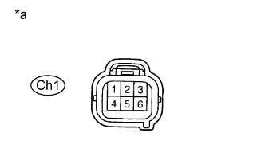

DTC P0327 Низкий уровень сигнала на входе цепи датчика детонации 1 (ряд 1 или отдельный датчик) |
DTC P0328 Высокий уровень сигнала на входе цепи датчика детонации 1 (ряд 1 или отдельный датчик) |
DTC P0332 Низкий уровень сигнала на входе цепи датчика детонации 2 (ряд 2) |
DTC P0333 Высокий уровень сигнала на входе цепи датчика детонации 2 (ряд 2) |
| № DTC | Условие обнаружения DTC | Неисправный участок |
| P0327 P0332 | Выходное напряжение датчика детонации составляет менее 0,5 В (логика диагностирования за 1 поездку). |
|
| P0328 P0333 | Выходное напряжение датчика детонации составляет более 4,5 В (логика диагностирования за 1 поездку). |
|
| Параметр / Устройство | Описание |
| Контакт | KNK1 - EKNK KNK2 - EKN2 |
| Настройка оборудования | 1 В/дел. 1 мс/дел. |
| Условие | Частота вращения коленчатого вала двигателя после прогрева двигателя поддерживается равной 4000 об/мин |
| 1.СЧИТАЙТЕ КОДЫ DTC (ПРОВЕРЬТЕ ЦЕПЬ ДАТЧИКА ДЕТОНАЦИИ) |
Отсоедините разъем Ch1.
С помощью выводов подсоедините разъемы следующим образом:
| Вилка – розетка |
| Контакт 2 - контакт 4 |
| Контакт 5 - контакт 6 |
| Контакт 4 - контакт 2 |
| Контакт 6 - контакт 5 |
Прогрейте двигатель.
Дайте двигателю поработать на 3000 об/мин в течение не менее 10 секунд.
Подсоедините портативный диагностический прибор к DLC3.
Включите портативный диагностический прибор.
Войдите в следующие меню: Powertrain / Engine and ECT / Trouble Codes.
Считайте коды DTC.
| Результат | Следующий шаг |
| Код DTC тот же, что и на момент доставки автомобиля (например, снова выводятся коды P0327 и P0328 или P0332 и P0333) | А |
| Код DTC отличается от кода на момент доставки автомобиля (например, сначала выводились коды P0327 и P0328, а затем – P0332 и P0333 или наоборот) | B |
| *1 | Датчик детонации |
| *2 | ECM |
| *a | Вид спереди разъема со стороны жгута проводов: (к проводу датчика детонации) |
| *b | Вид спереди разъема со стороны жгута проводов: (к проводу ECM) |
Подсоедините разъем Ch1.
|
| ||||
| А | |
| 2.ПРОВЕРЬТЕ ЖГУТ ПРОВОДОВ И РАЗЪЕМ (РАЗЪЕМ - ECM) |
Отсоедините разъем Ch1.
Отсоедините разъем ЭБУ.
Измерьте сопротивление в соответствии со значениями, приведенными в таблице ниже.
| Контакты для подключения диагностического прибора | Условие | Заданные условия |
| Контакт 2 розетки Ch1 - C35-11 (KNK1) | Всегда | Менее 1 Ом |
| Контакт 5 розетки Ch1 - C35-12 (EKNK) | Всегда | Менее 1 Ом |
| Контакт 4 розетки Ch1 - C35-5 (KNK2) | Всегда | Менее 1 Ом |
| Контакт 6 розетки Ch1 - C35-6 (EKN2) | Всегда | Менее 1 Ом |
| Контакты для подключения диагностического прибора | Условие | Заданные условия |
| Контакт 2 розетки Ch1 или C35-11 (KNK1) - масса | Всегда | 10 кОм или более |
| Контакт 5 розетки Ch1 или C35-12 (EKNK) - масса | Всегда | 10 кОм или более |
| Контакт 4 розетки Ch1 или C35-5 (KNK2) - масса | Всегда | 10 кОм или более |
| Контакт 6 розетки Ch1 или C35-6 (EKN2) - масса | Всегда | 10 кОм или более |
Подсоедините разъем Ch1.
Подсоедините разъем ECM.
|
| ||||
| OK | |
| 3.ПРОВЕРЬТЕ ECM (НАПРЯЖЕНИЕ) |
|  |
Отсоедините разъем Ch1.
Измерьте напряжение в соответствии со значениями, приведенными в таблице.
| Контакты для подключения диагностического прибора | Положение переключателя | Заданные условия |
| Контакт 2 - контакт 5 розетки Ch1 | Зажигание включено (IG) | 4,5-5,5 В |
| Контакт 4 - контакт 6 розетки Ch1 | Зажигание включено (IG) | 4,5 - 5,5 В |
| *a | Вид спереди разъема со стороны жгута проводов: (к проводу ECM) |
Подсоедините разъем Ch1.
|
| ||||
| OK | ||
| ||
| 4.ПРОВЕРЬТЕ ДАТЧИК ДЕТОНАЦИИ |
Отсоедините разъем Ch1.
Измерьте сопротивление в соответствии со значениями, приведенными в таблице ниже.
| Контакты для подключения диагностического прибора | Условие | Заданные условия |
| Контакт 2 - контакт 5 вилки Ch1 | 20°C (68°F) | 120 - 280 кОм |
| Контакт 4 - контакт 6 вилки Ch1 | 20°C (68°F) | 120 - 280 кОм |
| *a | Вид спереди разъема со стороны жгута проводов: (к проводу датчика детонации) |
Подсоедините разъем Ch1.
|
| ||||
| OK | ||
| ||
| 5.ПРОВЕРЬТЕ ЖГУТ ПРОВОДОВ И РАЗЪЕМ (РАЗЪЕМ - ДАТЧИК ДЕТОНАЦИИ) |
Отсоедините разъем Ch1.
Отсоединить разъемы датчика детонации.
Измерьте сопротивление в соответствии со значениями, приведенными в таблице ниже.
| Контакты для подключения диагностического прибора | Условие | Заданные условия |
| Контакт 2 вилки Ch1 - h2-2 | Всегда | Менее 1 Ом |
| Контакт 5 вилки Ch1 - h2-1 | Всегда | Менее 1 Ом |
| Контакт 4 вилки Ch1 - h1-2 | Всегда | Менее 1 Ом |
| Контакт 6 вилки Ch1 - h1-1 | Всегда | Менее 1 Ом |
| Контакты для подключения диагностического прибора | Условие | Заданные условия |
| Контакт 2 вилки Ch1 или h2-2 - масса | Всегда | 10 кОм или более |
| Контакт 5 вилки Ch1 или h2-1 - масса | Всегда | 10 кОм или более |
| Контакт 4 вилки Ch1 или h1-2 - масса | Всегда | 10 кОм или более |
| Контакт 6 вилки Ch1 или h1-1 - масса | Всегда | 10 кОм или более |
Подсоедините разъем Ch1.
|
| ||||
| OK | ||
| ||